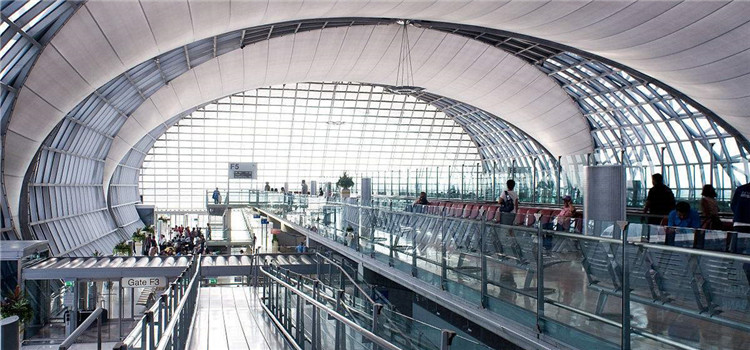

空路
曼谷有两个机场，分别是廊曼国际机场（Don Mueang Airport，三字代码DMK）和素万那普国际机场（Suvarnabhumi Airport，三字代码BKK）。

图：曼谷廊曼国际机场机场内部
目前，游客到达的多为素万那普国际机场，廊曼机场则是泰国国内航空的重要基地。如果在泰国国内飞行，大部分航班需要在廊曼机场乘坐。
1.现在国内许多城市都开通了直飞曼谷的航班，北京、上海、广州、昆明、成都、重庆、桂林、南宁、深圳、厦门、西安、郑州、南京、宁波、武汉、青岛、香港、澳门都有。如果没有直飞航班的城市，你可以根据自己的行程和票价选择附近的直飞城市。
2.网上订购飞机票可以选择以下几家航空公司：
泰国航空：www.thaiairways.com
Nokair：www.nokair.com
#曼谷素万那普国际机场 BKK#
新的曼谷机场，取代了已连续使用80多年的廊曼国际机场成为泰国新的国际航空港。位于曼谷以东约25公里沙没巴干府Bang Phli区的素万那普国际机场耗资300亿美元，在2001年12月动工修建，预定在2005年9月29日启用，然而由于工程进度落后，延迟到2006年9月28日才正式启用。
它的发展计划第一阶段，将提供两条飞机跑道，可在每小时提供76班航班，每年总载客量达4，500万人次，以及300万吨空运运货量，其客运大楼为现今全世界第二大之单栋航站大厦，整体为钢构玻璃帷幕建筑共7个楼层，有360个报到柜台、124个入国证照查验窗口及72个出国证照查验窗口。
地址：432， Soi Lad Krabang 3 Lat Krabang， Lat Krabang， Bangkok
第二阶段则可提供高达四条跑道，可在每小时提供112班航班，每年总载客量可达1亿人次，以及640万吨空运运货量。将成为东南亚地区最大的空运转运中心。
但个别国际航班仍在廊曼国际机场起降，特别是一些廉价航空公司的航班，国内航班选择廊曼机场的则更多。所以如需在曼谷转机，务必查清楚航班起降机场，以免耽误行程。
机场巴士
机场巴士往来于机场和曼谷市之间，共有4条线路（运营时间信息不准确，暂不提供），车费150B，售票处位于一楼的8号入口附近。（如果两个人及超过两人去曼谷中部，那么坐出租比较划算，如果去的更远一点的帮兰普，则选择机场巴士）
线路分别是：
AE1-机场到是隆路（Silom Road），即轻轨（BTS）Saladang站。开往是隆（走高速）。
AE2-机场到考山路（KhaoSan Road）。开往帮兰普（走高速）。
AE3-机场到素坤逸路（Sukhumvit Road）。开往素坤逸。
AE4-机场到华南蓬火车总站（Hualumpong Railway Station）。开往华南蓬火车站。
曼谷机场快线
从BCAT到机场的捷运有两种方式选择-直达快线和城市线。两条线路都是相同的轨道运行，时速每小时160公里，都经过Makkasan，可以换乘曼谷MRT地铁。
出租车
不要理睬那些拉生意的和所有指向所谓的“官方机场出租车”的黄色标牌。应走出抵达大厅，加入快速移动的队列，等待公共出租车。一般在这儿乘坐的出租车会打表，如遇到个别极品司机不愿意打表，一定要坚持跟他说“请打表”（Please by/use/on meter）。如果司机说NO，那么换一辆车继续。
公共汽车
可乘坐24小时免费服务的机场穿梭大巴（Shuttle Bus）到达Bus Terminal机场公共交通中心，再转乘坐公共汽车去景点，空调车费用为34泰株。
#曼谷廊曼国际机场 DMK#
或称旧曼谷国际机场，曾是东南亚最繁忙的机场之一，位于城市的北方25公里。新曼谷国际机场于2006年9月28日完工启用，当时廊曼机场终止使用六个月，但后来由于电脑故障等种种原因令新机场无法满足客流量而重开作国内机场使用。
地址：Vibhavadi Rangsit Rd, Don Mueang, Bangkok
廊曼国际机场位于曼谷北面的郊区，乘坐任何交通工具都四通八达，30分钟便可到达市中心、恰图恰市场及很多其他附近的景点。
陆路
#火车#
泰国各地都可以通往曼谷的华南蓬火车站，但泰国的火车速度较慢，一般城市间的往返都会选择小巴或者大巴。如果不赶时间，可以选择乘坐火车，感受泰式火车的风情。
地址：MRT Hua Lamphong Station, Thanon Rama IV, Rong Mueang, Pathum Wan, Bangkok

图：华南蓬火车站
#汽车#
曼谷有三个长途汽车站，分别连通泰国中部、北部和南部。距离较远的话，很多当地人会选择乘坐长途大巴车，从普吉岛到曼谷约8小时，从清迈到曼谷差不多8个小时。
#铁路#
北方线：连通曼谷和清迈，约851公里，特别快车行车时间约为14小时30分，中途主要车站有大城、罗富里、彭世洛、南邦府。
东北线：连通曼谷和老挝境内的诺凯，约624公里。特快列车行车时间11小时。中途主要站有：大城、呵叻、孔敬、廊开。
东方线：连通曼谷和柬埔寨边境的亚兰，约255公里。特别快车行车时间约5小时，快车需7小时，中途主要车站有：呵叻、乌汶。前往柬埔寨的暹粒（吴哥窟）可乘此线列车到亚兰过境。
南方线：连通曼谷和暹罗湾的马来半岛，约有990公里。途经华欣（Hua Hin），直达合艾。
国际线：连通曼谷和马来西亚，日夜都有定期班车，有特快或普快。马来西亚的伯特和富（Butterworth）至曼谷每逢星期一、三、五有三班车开行。
图：铁路
水路
#曼谷港#
地址：87 Wireless Road, Phatumwan, Bangkok
曼谷港是泰国第一大商港，也是世界二十大集装箱港口之一。位于泰国中部湄南河下游，濒临曼谷湾的北侧。海路东南至是拉差港56海里，至拉姆恰斑港60海里，至萨塔希普港79海里，至柬埔寨磅逊港294海里，南至宋卡港400海里，至新加坡港831海里，东北至香港1503海里。
后方，西南连马来半岛南北干线，东达泰柬边界亚兰镇，东南至新建集装箱中转港拉姆恰班。曼谷码头沿湄南河两岸分布，年吞吐量约1500万吨，全国95%进口货和75%的出口货由此出入。
马来西亚与泰国之间有轮船往返。乘坐轮船抵达曼谷港，需要办理入境登记，乘船离开泰国的时候还需要办理出境、海关和离港登记。